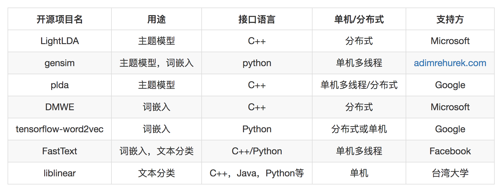
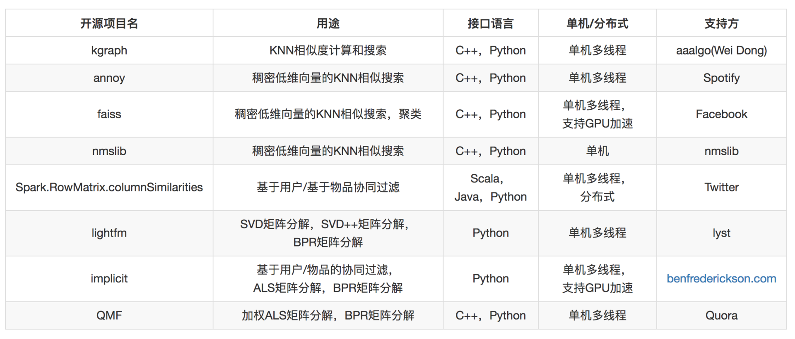
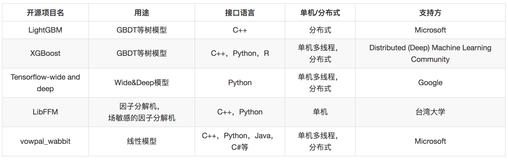
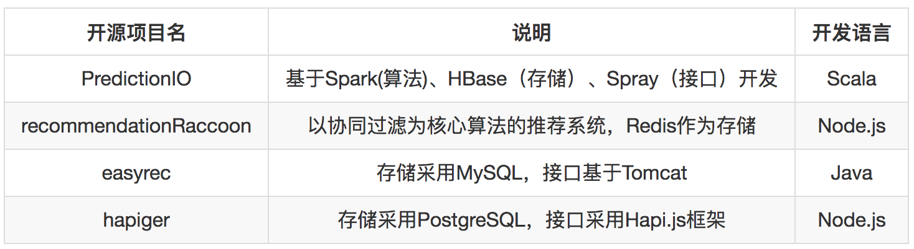

- 00 开篇词 用知识去对抗技术不平等.md
- 01 你真的需要个性化推荐系统吗_.md
- 02 个性化推荐系统有哪些绕不开的经典问题？.md
- 03 这些你必须应该具备的思维模式.md
- 04 画鬼容易画人难：用户画像的“能”和“不能”.md
- 05 从文本到用户画像有多远.md
- 06 超越标签的内容推荐系统.md
- 07 人以群分，你是什么人就看到什么世界.md
- 08 解密“看了又看”和“买了又买”.md
- 09 协同过滤中的相似度计算方法有哪些.md
- 10 那些在Netflix Prize中大放异彩的推荐算法.md
- 11 Facebook是怎么为十亿人互相推荐好友的.md
- 12 如果关注排序效果，那么这个模型可以帮到你.md
- 13 经典模型融合办法：线性模型和树模型的组合拳.md
- 14 一网打尽协同过滤、矩阵分解和线性模型.md
- 15 深度和宽度兼具的融合模型 Wide and Deep.md
- 16 简单却有效的Bandit算法.md
- 17 结合上下文信息的Bandit算法.md
- 18 如何将Bandit算法与协同过滤结合使用.md
- 19 深度学习在推荐系统中的应用有哪些_.md
- 20 用RNN构建个性化音乐播单.md
- 21 构建一个科学的排行榜体系.md
- 22 实用的加权采样算法.md
- 23 推荐候选池的去重策略.md
- 24 典型的信息流架构是什么样的.md
- 25 Netflix个性化推荐架构.md
- 26 总览推荐架构和搜索、广告的关系.md
- 27 巧妇难为无米之炊：数据采集关键要素.md
- 28 让你的推荐系统反应更快：实时推荐.md
- 29 让数据驱动落地，你需要一个实验平台.md
- 30 推荐系统服务化、存储选型及API设计.md
- 31 推荐系统的测试方法及常用指标介绍.md
- 32 道高一尺魔高一丈：推荐系统的攻防.md
- 33 和推荐系统有关的开源工具及框架介绍.md
- 34 推荐系统在互联网产品商业链条中的地位.md
- 35 说说信息流的前世今生.md
- 36 组建推荐团队及工程师的学习路径.md
- 加餐 推荐系统的参考阅读.md
- 结束语 遇“荐”之后，江湖再见.md
33 和推荐系统有关的开源工具及框架介绍
我们懂得了原理，知道了实际推荐系统需要考虑哪些元素之后。正当你摩拳擦掌之际，如果发现要先从挖地基开始，你整个人可能是崩溃的。
轮子不要重复造
但是事实上你没必要这样做也不应该这样做。大厂研发力量雄厚，业务场景复杂，数据量大，自己从挖地基开始研发自己的推荐系统则是非常常见的，然而中小厂职工们则要避免重复造轮子。这是因为下面的原因。
- 中小企业，或者刚刚起步的推荐系统，要达成的效果往往是基准线，通用的和开源的已经能够满足；
- 开源的轮子有社区贡献，经过若干年的检验后，大概率上已经好于你自己从零开始写一个同样功能的轮子；
- 对于没有那么多研发力量的厂来说，时间还是第一位的，先做出来，这是第一要义。
既然要避免重复造轮子，就要知道有哪些轮子。
有别于介绍一个笼统而大全的“推荐系统”轮子，我更倾向于把粒度和焦点再缩小一下，介于最底层的编程语言API和大而全的”推荐系统”之间，本文按照本专栏的目录给你梳理一遍各个模块可以用到的开源工具。
这里顺带提一下，选择开源项目时要优先选择自己熟悉的编程语言、还要选有大公司背书的，毕竟基础技术过硬且容易形成社区、除此之外要考虑在实际项目中成功实施过的公司、最后还要有活跃的社区氛围。
内容分析
基于内容的推荐，主要工作集中在处理文本，或者把数据视为文本去处理。文本分析相关的工作就是将非结构化的文本转换为结构化。主要的工作就是三类。
- 主题模型；
- 词嵌入；
- 文本分类。
可以做这三类工作的开源工具有下面的几种。

由于通常我们遇到的数据量还没有那么大，并且分布式维护本身需要专业的人和精力，所以请慎重选择分布式的，将单机发挥到极致后，遇到瓶颈再考虑分布式。
这其中FastText的词嵌入和Word2vec的词嵌入是一样的，但FastText还提供分类功能，这个分类非常有优势，效果几乎等同于CNN，但效率却和线性模型一样，在实际项目中久经考验。LightLDA和DMWE都是微软开源的机器学习工具包。
协同过滤和矩阵分解
基于用户、基于物品的协同过滤，矩阵分解，都依赖对用户物品关系矩阵的利用，这里面常常要涉及的工作有下面几种。
- KNN相似度计算；
- SVD矩阵分解；
- SVD++矩阵分解；
- ALS矩阵分解；
- BPR矩阵分解；
- 低维稠密向量近邻搜索。
可以做这些工作的开源工具有下面几种。

这里面的工作通常是这样：基础协同过滤算法，通过计算矩阵的行相似和列相似得到推荐结果。
矩阵分解，得到用户和物品的隐因子向量，是低维稠密向量，进一步以用户的低维稠密向量在物品的向量中搜索得到近邻结果，作为推荐结果，因此需要专门针对低维稠密向量的近邻搜索。
同样，除非数据量达到一定程度，比如过亿用户以上，否则你要慎重选择分布式版本，非常不划算。
模型融合
模型融合这部分，有线性模型、梯度提升树模型。

线性模型复杂在模型训练部分，这部分可以离线批量进行，而线上预测部分则比较简单，可以用开源的接口，也可以自己实现。
其他工具
Bandit算法比较简单，自己实现不难，这里不再单独列举。至于深度学习部分，则主要基于TensorFlow完成。
存储、接口相关开源项目和其他互联网服务开发一样，也在对应章节文章列出，这里不再单独列出了。
完整推荐系统
这里也梳理一下有哪些完整的推荐系统开源项目，可以作为学习和借鉴。 所谓完整的推荐系统是指：包含推荐算法实现、存储、接口。

总结
你可能注意到了，这里的推荐系统算法部分以Python和C++为主，甚至一些Python项目，底层也都是用C++开发而成。
因此在算法领域，以Python和C++作为开发语言会有比较宽泛的选择范围。
至于完整的推荐系统开源项目，由于其封装过于严密，比自己将大模块组合在一起要黑盒很多，因此在优化效果时，不是很理想，需要一定的额外学习成本，学习这个系统本身的开发细节，这个学习成本是额外的，不是很值得投入。
因此，我倾向于选择各个模块的开源项目，再将其组合集成为自己的推荐系统。这样做的好处是有下面几种。
- 单个模块开源项目容易入手，学习成本低，性能好；
- 自己组合后更容易诊断问题，不需要的不用开发；
- 单个模块的性能和效果更有保证。
当然，还是那句话，实际问题实际分析，也许你在你的情境下有其他考虑和选择。如果还有哪些开源项目，你觉得值得推荐，也欢迎留言分享。
© 2019 - 2023 Liangliang Lee. Powered by gin and hexo-theme-book.